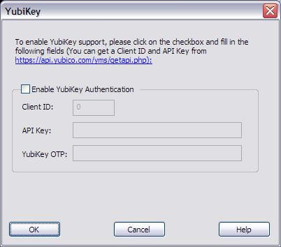
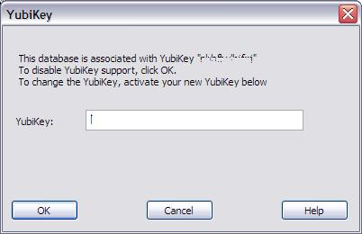

Password Safe
supports authentication using Yubico's YubiKey
authentication token. This is a small device that plugs into your
computer's USB port, and generates a cryptographic one time password
(OTP) whenever the device's button is pressed.
Password Safe allows you to associate your password database with your
YubiKey device. Once you've done this, you can use your YubiKey to
unlock your database, instead of re-entering your master passphrase
("combination").
Note that in order to open your database the first time, you still need
to enter your master passphrase. Important Note: The YubiKey does not strengthen the security of Password Safe,
but rather, provides a safe and convenient way to unlock a locked
database. The security of your database is still determined by the
strength of your master passphrase.
Associating your Yubikey device to your database
Before you can associate your YubiKey to a PasswordSafe
database, you need to get some information from Yubico's web site.
Browse to https://api.yubico.com/yms/getapi.php, and fill in the required details. The information will be sent to the e-mail address you specify.
Choose "YubiKey..." from the Manage
menu. The following screen will be displayed:

Click on the "Enable YubiKey Authentication" checkbox, and fill in the Client ID and API Key as provided from Yubico.
Insert your YubiKey device in a USB slot on your PC, and
then touch the YubiKey's button. A string of characters will be typed
by the device, and sent by Password
Safe to Yubico's authentication server. If the
authentication is successful, the dialog box will close. If not, an
error message describing the error will be displayed.
That's it! From now on, you can use your YubiKey to unlock
this database by pressing its button instead of typing the passphrase
when prompted for the safe combination.
Note: The
first time you open the database, you still need to enter the safe
combination. YubiKey cannot be used to open a database, only to unlock
a previously opened one.
Changing your YubiKey or disabling YubiKey support
Once you've associated your database with a specific YubiKey
device, the YubiKey screen can be used to change the device, or to
disable YubiKey support (for example, if you've lost your YubiKey). The
YubiKey screen will appear as follows:

To disable YubiKey support, just clear the "Enable YubiKey Authentication" checkbox and click OK.
To associate the database with a different YubiKey, just
enter the new values for the Client ID and API Key fields, and activate
your Yubikey in the YibiKey OTP field. After authentication,
the new YubiKey will be associated with the database instead of the
previous one, and the window will close.
To leave the current YubiKey associated with the database,
just click on Cancel.